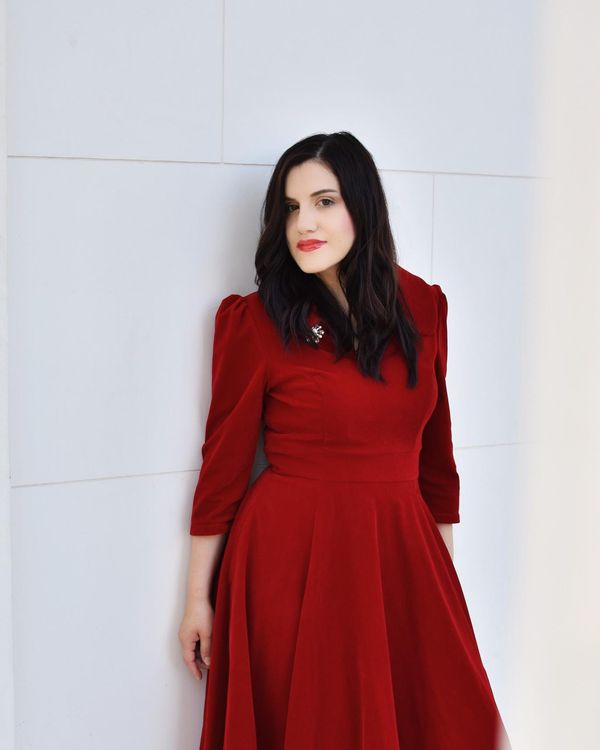

Catalina Paz
Soprano
Chilean-born lyric coloratura soprano Catalina Paz has developed her career between Spain and Austria, with a particular focus on Baroque and Classical repertoire. Her operatic roles include Konstanze in Mozart’s Die Entführung aus dem Serail at the Vienna Musikverein, Galatea in Handel’s Acis and Galatea, Sylva Varescu in Kálmán’s Die Csárdásfürstin, Musetta in Puccini’s La Bohème and Lisinga in Gluck’s Le Cinesi at the Teatro de la Maestranza in Seville. She has performed at the Musikverein, Wiener Konzerthaus, MuTh and Palau de la Música Valencia, and is currently specialising in Early Music at MUK Vienna.